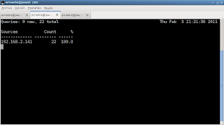
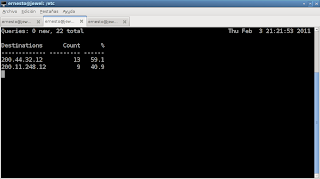
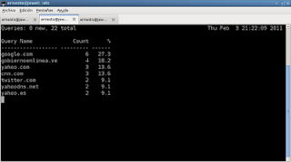
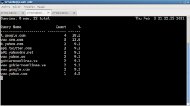
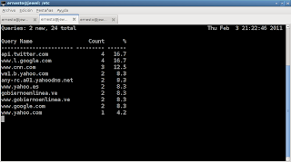

Mejorando la velocidad de consultas de DNS con dnsmasq y probar pruebas de diagnostico
Posted on jue 03 febrero 2011 in Tutorial Linux y Python • 5 min read
En el artículo de hoy se probará que al usar dnsmasq como dnscache mejorará la conexión a internet en especial cuando se navega por el celular o se tiene una conexión a internet algo lenta. Adicionalmente se mencionarán varias herramientas de diagnostico de consultas de DNS como lo son dnstracer, dnswalk, dig, host. Adicionalmente se mostrará u par de scripts en python para consultas de DNS.
Revisar los DNS que usa nuestro equipo: Los DNS que se está usando en el equipo son los DNS de CANTV, esto se puede ver al ejecutar un cat a /etc/resolv.conf
# Dynamic resolv.conf(5) file for glibc resolver(3) generated by resolvconf(8)
# DO NOT EDIT THIS FILE BY HAND -- YOUR CHANGES WILL BE OVERWRITTEN
nameserver 200.44.32.12
nameserver 200.11.248.12
Está información es la que maneja los servidores de DHCP de donde se encuentra conectado el equipo.
Ahora se ejecuta el comando dig el cual una de las informaciones que trae es el tiempo de la consulta. La consulta se realizo con www.velug.org.ve:
dig www.velug.org.ve
; <<>> DiG 9.7.2-P3 <<>> www.velug.org.ve
;; global options: +cmd
;; Got answer:
;; ->>HEADER<<- opcode: QUERY, status: NOERROR, id: 14680
;; flags: qr rd ra; QUERY: 1, ANSWER: 2, AUTHORITY: 0, ADDITIONAL: 0
;; QUESTION SECTION:
;www.velug.org.ve. IN A
;; ANSWER SECTION:
www.velug.org.ve. 3600 IN CNAME libertad.velug.org.ve.
libertad.velug.org.ve. 3600 IN A 150.188.8.196
;; Query time: 320 msec
;; SERVER: 200.44.32.12#53(200.44.32.12)
;; WHEN: Thu Feb 3 20:59:08 2011
;; MSG SIZE rcvd: 73
Da como resultado 320 mili segundos.
Ahora con la herramienta dnstracer se verifica como se resuelven la resolución de nombres desde el DNS de CANTV saltando por los distintos servidores de nombres. dnstracer -c -s 200.11.248.12 www.velug.org.ve La opción -c deshabilita la cache local, -s se le dice cual es el servidor de nombres y luego se le pasa el sitio a consultar. El resultado es el siguiente:
dnstracer -c -s 200.11.248.12 www.velug.org.ve
Tracing to www.velug.org.ve[a] via 200.11.248.12, maximum of 3 retries
200.11.248.12 (200.11.248.12) Got answer [received type is cname]
Se logro la consulta y se ve que el sitio de velug está dentro del entorno de CANTV o nic.ve.
La siguiente prueba es con la herramienta dnswalk la cual devuelve un resultado de la consulta de DNS.
dnswalk velug.org.ve.
Checking velug.org.ve.
Getting zone transfer of velug.org.ve. from turpial.velug.org.ve...failed
FAIL: Zone transfer of velug.org.ve. from turpial.velug.org.ve failed: Response code from server: REFUSED
Getting zone transfer of velug.org.ve. from libertad.velug.org.ve...failed
FAIL: Zone transfer of velug.org.ve. from libertad.velug.org.ve failed: connection failed
BAD: All zone transfer attempts of velug.org.ve. failed!
2 failures, 0 warnings, 1 errors.
El resultado es que no acepta transferir la zona de velug.org.ve.
Ahora a instalar dnsmasq como dnscache. Para instalarlo se ejecuta aptitude.
aptitude install dnsmasq
Ahora al revisar el archivo resolv.conf aparece como nameserver el 127.0.0.1. Al revisar el directorio /etc/resolvconf/resolv.conf.d/ aparece el archivo original que contiene los servidores de nombre de CANTV:
cat original
domain cantv.net
search cantv.net
nameserver 200.44.32.12
nameserver 200.11.248.12
Ahora se vuelve a ejecutar dig al sitio a www.velug.org.ve
dig www.velug.org.ve
; <<>> DiG 9.7.2-P3 <<>> www.velug.org.ve
;; global options: +cmd
;; Got answer:
;; ->>HEADER<<- opcode: QUERY, status: NOERROR, id: 40987
;; flags: qr rd ra; QUERY: 1, ANSWER: 2, AUTHORITY: 0, ADDITIONAL: 0
;; QUESTION SECTION:
;www.velug.org.ve. IN A
;; ANSWER SECTION:
www.velug.org.ve. 1250 IN CNAME libertad.velug.org.ve.
libertad.velug.org.ve. 76 IN A 150.188.8.196
;; Query time: 92 msec
;; SERVER: 127.0.0.1#53(127.0.0.1)
;; WHEN: Thu Feb 3 21:06:08 2011
;; MSG SIZE rcvd: 73
Ahora devuelve un tiempo de la consulta de 92 milisegundos.
Se vuelve a ejecutar dnstracer colocando como servidor el servidor dnsmasq con el siguiente resultado:
dnstracer -c -s 127.0.0.1 www.velug.org.ve
Tracing to www.velug.org.ve[a] via 127.0.0.1, maximum of 3 retries
127.0.0.1 (127.0.0.1) Got answer [received type is cname]
|\___ libertad.velug.org.ve [velug.org.ve] (No IP address)
\___ turpial.velug.org.ve [velug.org.ve] (150.188.92.2) Got authoritative answer [received type is cname]
Se nota que consulta con el servidor de nombres local y luego devuelve el resultado de la consulta.
Ahora el siguiente cambio que se realizará es usar los DNS públicos de google y los de opendns.com. Esos DNS se agregan en el archivo original antes mencionado.
Ahora el archivo contiene primero los DNS de google, luego los de opendns y al final los de cantv.
nameserver 8.8.8.8
nameserver 8.8.4.4
nameserver 208.67.222.222
nameserver 208.67.220.220
domain cantv.net
search cantv.net
nameserver 200.44.32.12
nameserver 200.11.248.12
Se vuelve a realizar una consulta dig pero antes se reinicia el servicio de dnsmasq para evitar que ya se encuentra en cache el sitio de velug.
dig www.velug.org.ve
; <<>> DiG 9.7.2-P3 <<>> www.velug.org.ve
;; global options: +cmd
;; Got answer:
;; ->>HEADER<<- opcode: QUERY, status: NOERROR, id: 26497
;; flags: qr rd ra; QUERY: 1, ANSWER: 2, AUTHORITY: 0, ADDITIONAL: 0
;; QUESTION SECTION:
;www.velug.org.ve. IN A
;; ANSWER SECTION:
www.velug.org.ve. 3600 IN CNAME libertad.velug.org.ve.
libertad.velug.org.ve. 2907 IN A 150.188.8.196
;; Query time: 158 msec
;; SERVER: 127.0.0.1#53(127.0.0.1)
;; WHEN: Thu Feb 3 21:14:27 2011
;; MSG SIZE rcvd: 73
Subio un poco pero al volver a hacer una consulta baja a 0 mili segundos.
La siguiente herramienta mostrará el tráfico generado por las consultas de DNS, esa herramienta se llama dnstop.
dnstop -l 4 wlan0
El comando define niveles de tablas con la opción -l luego se le pasa la interfaz por donde va a escuchar el tráfico de DNS. Las siguiente figura muestra la pantalla que despliega la aplicación con la opción s que muestra la fuente de la consulta.

Muestra la IP del servidor local.
La siguiente figura muestra los DNS de CANTV con la cantidad de consultas realizadas a cada servidor. Esa información se ve al presionar la tecla d.

Luego se puede ver la cantidad de tablas por niveles de profundidad que se le dio al comando, al presionar el 2 se muestra lo siguiente:

Aqui aparecen los dominios consultados con la cantidad de veces que se usaron.
Luego al presionar 3 aparecerá más información de dichos sitios:

La siguiente muestra la tabla del nivel 4.

Para terminar se mostrará el uso del módulo python-dns, se creará un script en python para consultar los las IPs de varios sitios en internet.
#!/usr/bin/env python
"""
Nombre: consulta-dns.py
Descripcion: Programa que permite realizar consultas de IPs a sitios en internet
Autor: Ernesto Crespo
Correo: ecrespo@gmail.com
Version:0.1
Licencia: GPLv3.
"""
#Se importa el modulo dns para resolver nombres
import dns.resolver
#Se crea la lista de sitios a consultar
sitios = ["python.org","debian.org","debian.org.ve","velug.org.ve"]
#Se crea la funcion consulta que se le pasa la lista de sitios.
#Se crea la funcion consulta que se le pasa la lista de sitios.
def consulta(lista=sitios):
#Se crea un diccionario donde se almacena los resultados
resultado = {}
#Se crea un ciclo de los sitios de internet para averiguar las IPs de cada uno
for equipo in lista:
#Se crea una lista para las IPs
ips = []
#Se consulta la IP del equipo.
ip = dns.resolver.query(equipo,"A")
#Si tiene varias IPs se almacena en la lista de IPs
for i in ip:
ips.append(str(i))
#Se guarda las IPs del equipo en el diccionario
resultado[equipo] = ips
#Se retorna el diccionario con el resultado
return resultado
if __name__ == "__main__":
#Se llama a la funcion consulta
respuesta = consulta()
#Se toma la lista de equipos de la funcion keys del diccionario donde se recorre en un ciclo.
for lista in respuesta.keys():
#Se presenta en pantalla cada sitio con sus IPs
print lista, respuesta[lista]
El resultado del programa es el siguiente:
debian.org ['206.12.19.7', '128.31.0.51']
python.org ['82.94.164.162']
velug.org.ve ['150.188.92.2']
debian.org.ve ['75.119.207.96']
===
¡Haz tu donativo! Si te gustó el artículo puedes realizar un donativo con Bitcoin (BTC) usando la billetera digital de tu preferencia a la siguiente dirección: 17MtNybhdkA9GV3UNS6BTwPcuhjXoPrSzV
O Escaneando el código QR desde billetera: